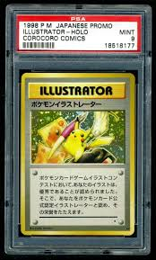
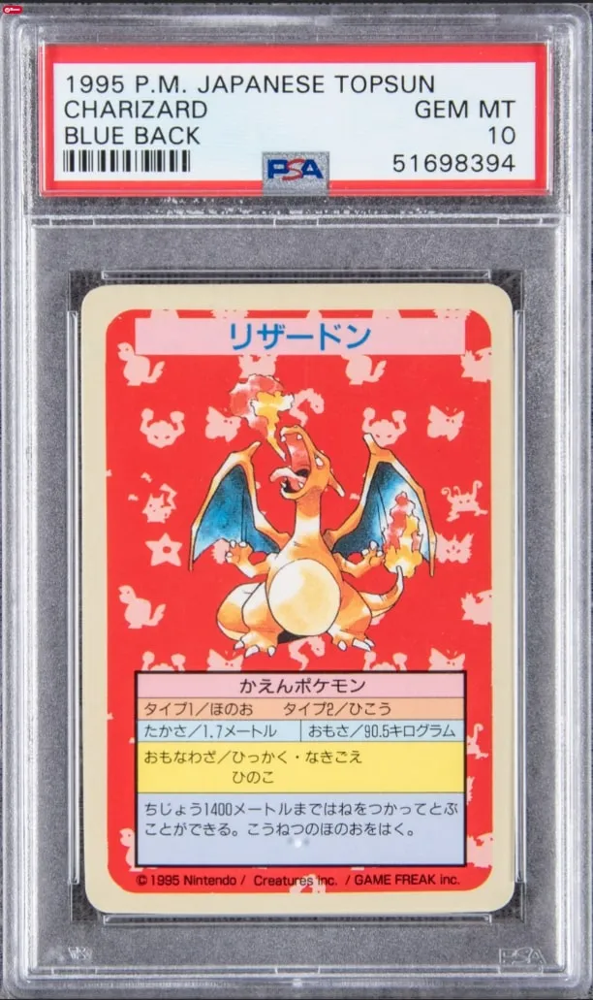
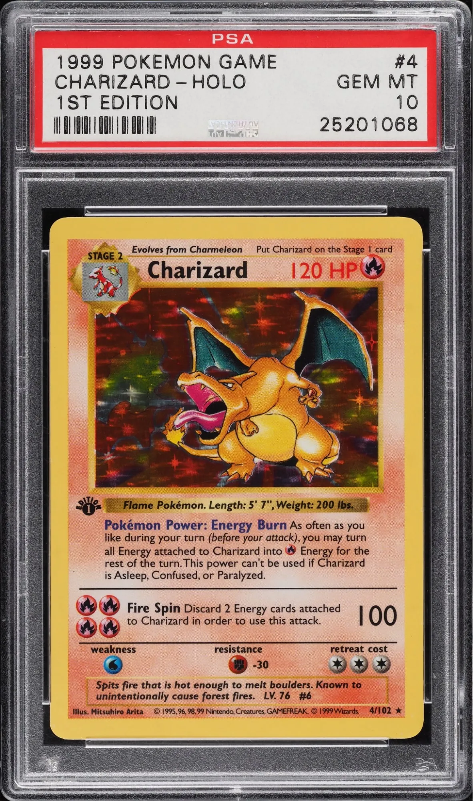
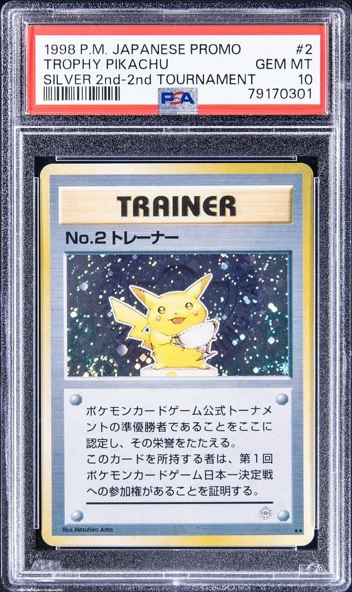
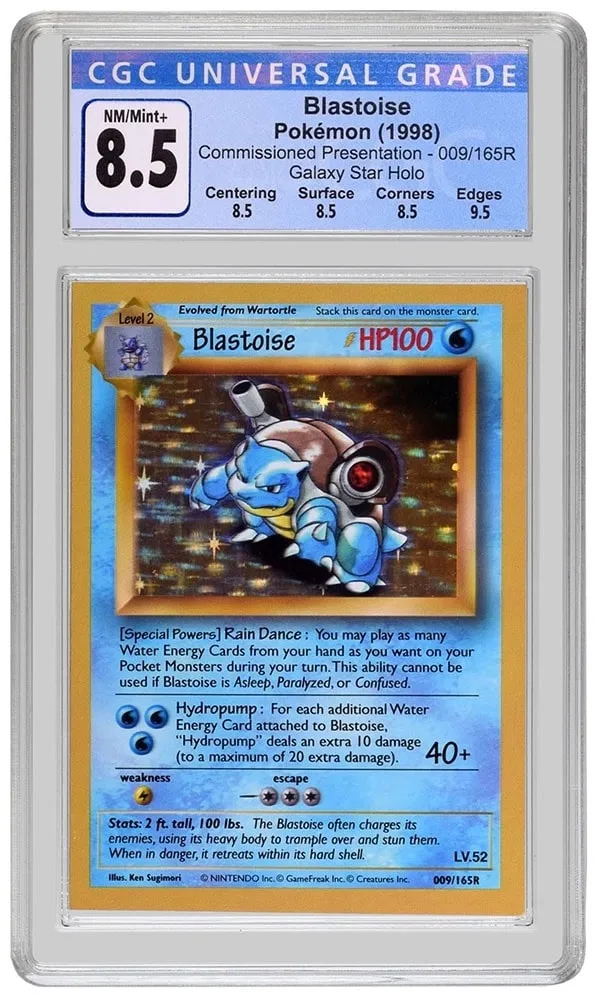

5 Most Expensive Pokémon Cards
#1 Illustrator Pikachu (1998) - $5,275,000

#2 Charizard Topsun Blue Back (1997)

#3 First Edition Shadowless Holographic Charizard #4 (1999)

#4 Trophy No.2 Pikachu, Silver 2nd Place, Second Tournament (1998)

#5 Commissioned Presentation Blastoise Galaxy Star Holo (1998)
